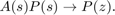
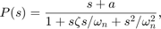
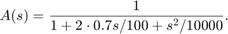
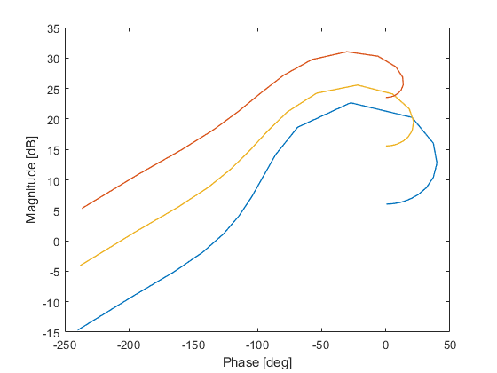
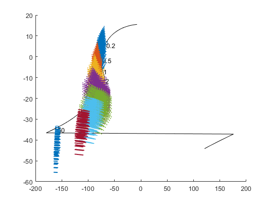

Exmaple: Black box
Black-Box is a speciel type of qplant that allows for arbitrary plant definitions. In this exmaple we use blakc box qplant to define a descrete-time plant. The descrete-time plant is obtained by Zero-Order Hold translation,

The continuos-time plant is given as

with ![$$ k \in [2,5], ~~ a \in [1,3], ~~ \zeta \in [0.1,0.6], ~~ \omega_n \in [4,8]. $$](ex_blackBox_eq11690946063553646581.png)
The anti aliasing filter is given as

The descrete plant model is defined by a dedicaated custom made m-file named explant:
f = @explant;
------------------------------------------------------------------------
function Pz = explant(k,a,zet,wn,s)
Ts = 0.02; z = exp(Ts*s); % approximate z N = length(s); y = zeros(N,1); for ii=1:N num = k(ii).*[1 a(ii)]; den = conv([1/(wn(ii)*wn(ii)) 2*zet(ii)/wn(ii) 1],[1/10000 2*0.7/100 1]); Pz = c2d(tf(num,den),Ts,'zoh'); % convert by ZOH [dnum, dden] = tfdata(Pz); % cell object are returned y(ii) = polyval(dnum{1},z(ii))./polyval(dden{1},z(ii)); end
end
------------------------------------------------------------------------
Note that the only restriction is that the external plant function be able to take vectors of parameters and s and return a vector of the same size.
Define the uncertain parameters as qpar array. Note that a qapr array must be a column vector (horizontal concatenation produces a qpoly object!)
% uncertain parameters k=qpar('k',2,2,5,8); a=qpar('a',3,1,3,8); z=qpar('z',0.6,0.3,0.6,8); wn=qpar('wn',4,4,8,8); pars=[k ; a ; z ; wn];
The black box plant is now defined as
Pblack = qblackbox(f,pars)
Pblack =
qblackbox with properties:
blackBox: @explant
num: []
den: []
pars: [4×1 qpar]
unstruct: []
uncint: []
info: 'generated from BalckBox func handle on: 21-Apr-2020 00:19:08'
templates: [0×0 qtpl]
nominal: [0×0 qfr]
delay: []
Usage is same as a dum/den qplant. We can plot the nyquist plot for selected cases,
parcases = [2 1 0.3 4 ; 5 3 0.6 8 ; 3 2 0.5 6].'; Pblack.niccases(parcases,logspace(-2,2,30))
compute the nominal case and templates
Pblack.cnom(logspace(-2,2,200))
w = [0.2 0.5 1 2 5 10 20 50];
Pblack.ctpl('recedge',w);
Pblack.showtpl;
ans =
qblackbox with properties:
blackBox: @explant
num: []
den: []
pars: [4×1 qpar]
unstruct: []
uncint: []
info: 'generated from BalckBox func handle on: 21-Apr-2020 00:19:08'
templates: [0×0 qtpl]
nominal: [1×1 qfr]
delay: []
Calculating templates by recurcive edge grid
--> for w=0.2 [rad/s]
--> for w=0.5 [rad/s]
--> for w=1 [rad/s]
--> for w=2 [rad/s]
--> for w=5 [rad/s]
--> for w=10 [rad/s]
--> for w=20 [rad/s]
--> for w=50 [rad/s]
PRUNE: Phase uncertainty larger than 360, or not connected
 and etc. Do note that everything runs much slower. This issue should be fixed in future openQsyn versions.